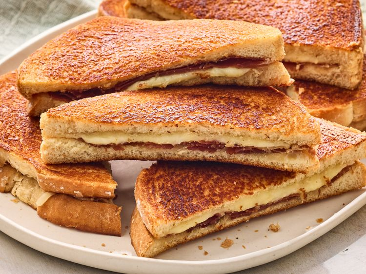

Home

Ingredients
- 4 (1/2 inch thick) slices heaty white bread
- 2 ounces thinly sliced serrano ham
- 4 ounces Manchego cheese, shredded
- 2 tablespoons salted butter, softened
Directions
- Top 2 bread slices evenly with serrano ham, followed by a sprinkle of 1/2 cup Manchego on each. Place remaining 2 bread slices on top of Manchego. Spread butter evenly on both sides of sandwiches.
- Heat a large nonstick skillet over medium. Add sandwiches to skillet; lightly cover with aluminum foil, then place a large cast-iron skillet on top to compress. (Alternatively, use a heavy skillet weighted with 2 heavy cans.) Cook, flipping sandwiches once and adjusting heat as necessary, until bread is golden brown and toasted and cheese melts, 2 to 3 minutes per side.
- Transfer sandwiches to a cutting board. Cut the crusts off, then cut into triangles. Serve immediately.
Nutritional Facts(per serving)
578 36g 32g 31g
Calories Fat Carbs Protein